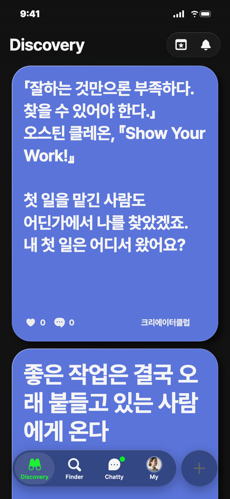
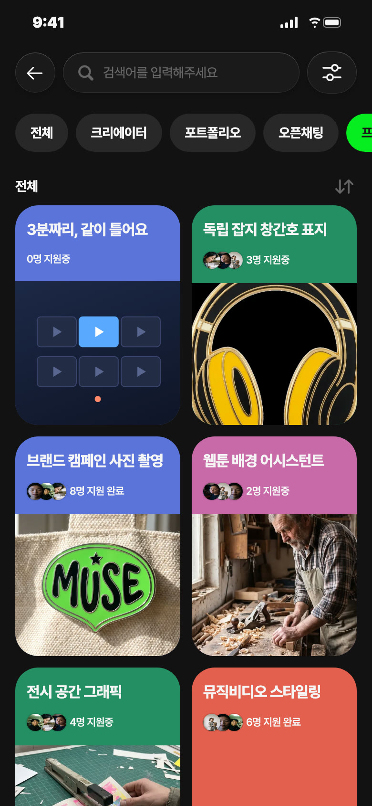
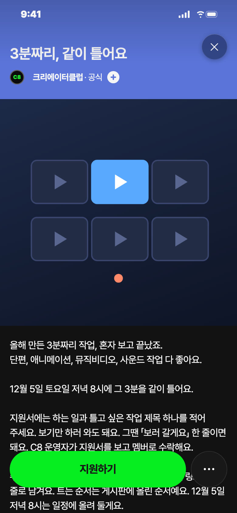
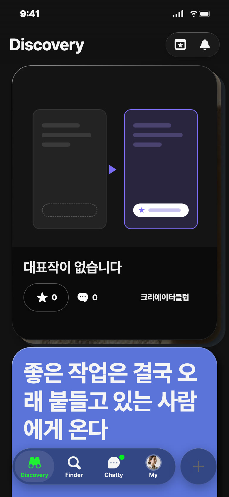
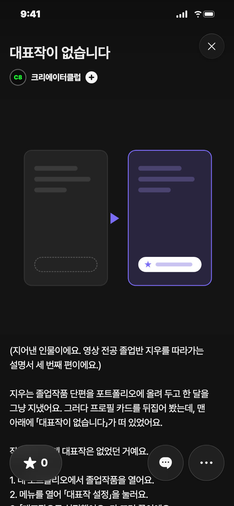

C8 앱 게시 시안 · 11/12(목) — 오늘 추천: 영감 · 낮 12시
오늘 추천 · 영감 · 낮 12시 · 파랑

칸: 창작자 말 그대로 × 일 받기
왜 오늘: 목요일은 창작자 말 그대로 자리, 졸업 시즌이라 첫 일을 기다리는 회원이 많을 때
보낼 사람: 첫 일을 아직 못 받은 후배에게 「여기 댓글 봐, 다들 어디서 받았는지」
받고 싶은 댓글: 「졸업전시 보러 온 분이 명함 가져가서, 두 달 뒤에 연락 왔어요」
영감 글
「잘하는 것만으론 부족하다. 찾을 수 있어야 한다.」 오스틴 클레온, 『Show Your Work!』 첫 일을 맡긴 사람도 어딘가에서 나를 찾았겠죠. 내 첫 일은 어디서 왔어요?
비축 · 프로젝트 · 파랑


칸: 같이 보기 × 판 열기
왜 비축: 오늘은 영감 자리, 26.46.0 게시판·일정 기준 — 운영자·46 출시일은 게시 전 확정
보낼 사람: 과제로 만든 단편 하드에만 둔 동기에게 「그거 여기서 틀자」
받고 싶은 지원: 「애니 해요. 2분 40초짜리 졸업 과제 틀고 싶어요」
제목
3분짜리, 같이 틀어요
카테고리
같이 보기
모집 내용
하는 일 · 틀고 싶은 작업 제목 하나(보기만 하러 오면 「보러 갈게요」) · 12/3까지 지원 · 12/5(토) 저녁 8시 · 상품 없음
설명
올해 만든 3분짜리 작업, 혼자 보고 끝났죠. 단편, 애니메이션, 뮤직비디오, 사운드 작업 다 좋아요. 12월 5일 토요일 저녁 8시에 그 3분을 같이 틀어요. 지원서에는 하는 일과 틀고 싶은 작업 제목 하나를 적어 주세요. 보기만 하러 와도 돼요. 그땐 「보러 갈게요」 한 줄이면 돼요. C8 운영자가 지원서를 보고 멤버로 수락해요. 수락되면 작업을 포트폴리오에 올리고, 게시판에 링크를 한 줄로 남겨요. 트는 순서는 게시판에 올린 순서예요. 12월 5일 저녁 8시는 일정에 올려 둘게요. 그날은 게시판 순서대로 같이 열어 보고, 한 편 끝날 때마다 채팅방에 한 줄씩 남겨요. 지원은 12월 3일까지, 상품은 없어요. 혼자 보면 3분이지만, 같이 보면 그 3분에 말이 붙어요.
비축 · 포트폴리오


칸: 앱 소개 × 쓸모 (설명서 연재 3편)
왜 비축: 화요일 설명서 자리 후보(11/17), 1·2편 샐리 별점 뒤
근거: iOS 코드 — 내 포폴 메뉴 「대표작 설정」·「대표작으로 설정했어요.」, 팀 작업 불가, 카드 뒷면 「대표작이 없습니다」·대표작 제목 누르면 그 작품으로 이동
보낼 사람: 졸업작품 올려 두고 끝낸 동기에게 「너 카드 뒤집어 봐」
제목
대표작이 없습니다
설명
(지어낸 인물이에요. 영상 전공 졸업반 지우를 따라가는 설명서 세 번째 편이에요.) 지우는 졸업작품 단편을 포트폴리오에 올려 두고 한 달을 그냥 지냈어요. 그러다 프로필 카드를 뒤집어 봤는데, 맨 아래에 「대표작이 없습니다」가 떠 있었어요. 작품은 있는데 대표작은 없었던 거예요. 1. 내 포트폴리오에서 졸업작품을 열어요. 2. 메뉴를 열어 「대표작 설정」을 눌러요. 3. 「대표작으로 설정했어요.」가 뜨면 끝이에요. 이제 카드 뒷면 대표작 자리에 졸업작품 제목이 떠요. 팀으로 만든 작품은 대표작으로 정할 수 없어서, 지우는 혼자 만든 졸업작품을 골랐어요. 처음 보는 사람은 카드 뒷면에서 그 제목부터 눌러 봐요. #대표작 #포트폴리오